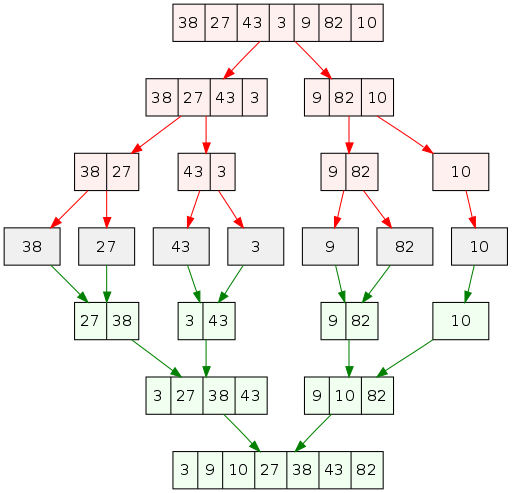
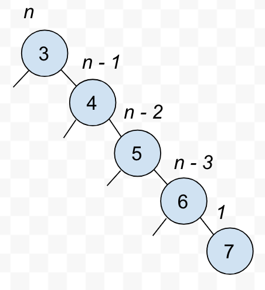
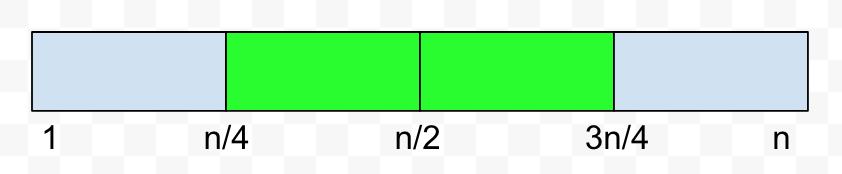
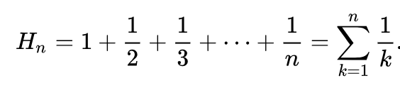

Computer Science 2: Algorithms
Detroit Labs Dev Coaching
2018
Lecture 5
Practice Problem
What is an efficient algorithm for discovering whether two sets are disjoint? Analyze the complexity of your algorithm. What happens when the sets have very different sizes?
Mergesort

Implementation
mergesort(item type s[], int low, int high) {
int i; /* counter */
int middle; /* index of middle element */
if (low < high) {
middle = (low+high)/2;
mergesort(s,low,middle);
mergesort(s,middle+1,high);
merge(s, low, middle, high);
}
}
Merging strategy
[1, 3, 5, 6] ++ [2, 4, 7, 8]
Mergesort analysis

Divide and Conquer
- binary search
- mergesort
- quicksort
- FFT
- matrix multiplication
\[T(n) = 2 \times T({n \over 2}) + \theta(n) \rightarrow \theta(n \log n)\]
External vs Internal
- internal: fully in memory (RAM)
- external: using external storage (hard drive, other processors)
Quicksort

Partitioning
- Could make up to \(n\) swaps.
- Pivot ends up in right place
- Elements never "jump" sides
- Allows recursive sorting of sub-arrays
Pseudocode
Quicksort(A, low, high)
if (low < high)
pivot-index = Partition(A,low,high)
Quicksort(A,low, pivot-index - 1)
Quicksort(A, pivot-index + 1, high)
Pseudocode
Partition(A,low,high)
pivot = A[low]
leftwall = low
for i = low+1 to high
if (A[i] < pivot) then
leftwall = leftwall+1
swap(A[i],A[leftwall])
swap(A[low],A[leftwall])
Quicksort Best Case
- Partitions happen in \(O(n)\)
- Best case: pivot perfectly divides data
- Subproblems would be \(n \over 2\) size
- \(n \over 2^d\) partitioning work
- Perfectly divided tree are \(\log n\) divisions
- Best case time is \(O(n \log n)\)
Quicksort Worst Case
- Partition still takes \(O(n)\) time
- Worst case: pivot does not divide data
- Subproblems are \(n - 1\) size
- \((n - d)\) partitioning work
- Non-divided trees are lists
- Worst case time is \(O(n^2)\)
Quicksort Worst Case

Quicksort Average Case

Good Partitions
\[(3/4)^d \times n = 1 → n = (4/3)^d\]
\[\log n = d \times \log(4/3)\]
\[d = \log {4 \over 3} \times \log n < 2 \log n\]
Bad Partitions
\[{{3n \over 4} + {n \over 4} \over 2} = {n \over 2}\]
\(2 \times \log n\) good partitions do the job, and half of partitions will be good. That's ≈ \(4 \times \log n\) depth on average.
Average Case Analysis
\[T(n) = \sum_{p=1}^n {1 \over n}(T(p - 1) + T(n - p)) + n - 1\]

\[H_n = \sum_{i=1}^n {1 \over i} \approx \ln n\]
And then there was more math
\[{T(n) \over n + 1} = {T(n − 1) \over n} + {2(n-1) \over n(n+1)}\]
\[\sum_{i=1}^n {2(i - 1) \over (i + 1)} \approx 2 \sum_{i=1}^n {1 \over (i + 1)} \approx 2 \ln n\]
… and then more math … actually ≈ 1.38 ln n
Enemy Sort
Randomize the pivot.
Randomization
Random quicksort runs in \(O(n \log n)\) with high probability.
Good pivots
- Choose a random pivot
- Choose the middle index
- Choose the median
The worst case will always remain \(O(n^2)\)
Comparing sorts
- Selection sort \(\theta(n^2)\)
- Heapsort \(\theta(n \log n)\)
- Quicksort \(\theta(n \log n)\)